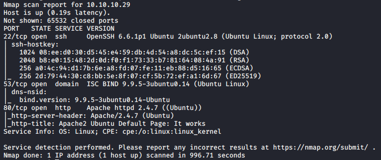

nmap scan was done (machone is Bank)


this didnt work
-----------------------------------------------------------
machine is bastard now
did nmap scan now


http://vmweb.lan/drupal-7.54
possible scenarios
Drupal 7.x Module Services - Remote Code Execution | php/webapps/41564.php
drupal version : 7.54
Trying exploit php/webapps/44449.rb. First issue I faced when was \r symbols in exploit script, but it can be easily fixed using dos2unix 44449.rb, another error I faced was /usr/lib/ruby/2.7.0/rubygems/core_ext/kernel_require.rb:92:in 'require': cannot load such file -- highline/import (LoadError), simply googling the error lead me to this issue and so I fixed it with sudo gem install highline.